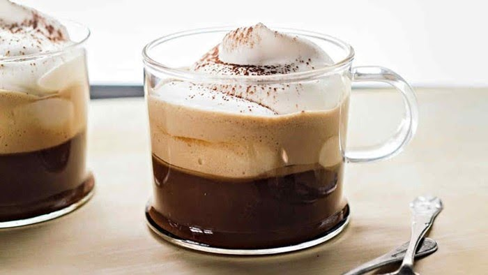
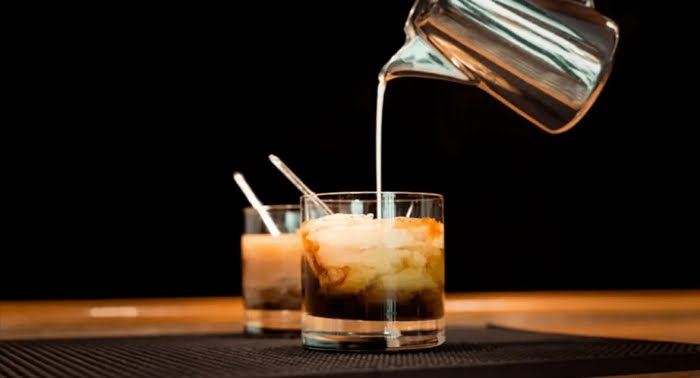
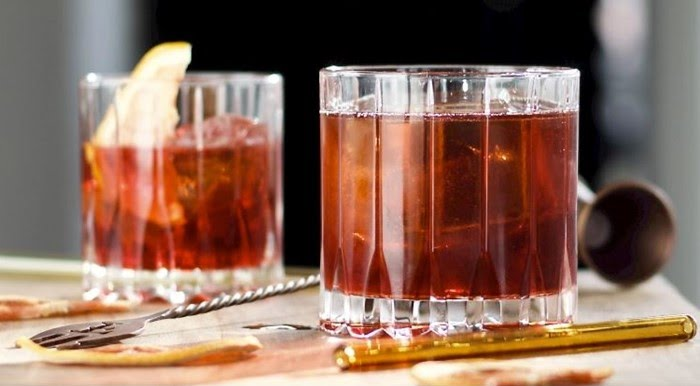
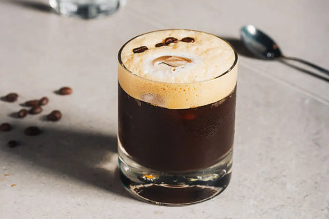
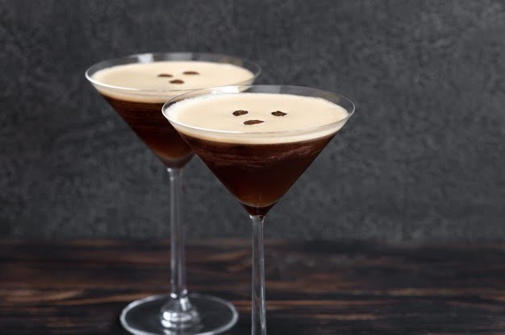

El café y el alcohol son dos bebidas que combinan a la perfección si sabes cómo hacerlo...
Existen diferentes tipos de café con alcohol que podemos tomar en forma de cóctel o de bebida caliente. Mezclar café y alcohol es un arte, y existen algunas combinaciones clásicas que no fallan, como el típico carajillo o el café irlandés. Pero más allá de estas bebidas conocidas en todo el mundo, existen otras mezclas que seguro te sorprenderán.
El café irlandés es una bebida de origen irlandés que combina café caliente, whisky irlandés, azúcar y crema batida. Se sirve generalmente en una copa de vidrio transparente para mostrar las capas de la bebida. La bebida se ha vuelto popular en todo el mundo, y hay muchas variaciones diferentes de la receta. Algunas personas prefieren usar azúcar moreno, y otras usan crema de leche en lugar de crema batida.
El Ruso Blanco es un cóctel cremoso y dulce elaborado con vodka, licor de café (como Kahlúa) y crema, servido con hielo. Es conocido por su sabor equilibrado y suave, y su popularidad se disparó gracias a la película "El Gran Lebowski". Se prepara directamente en un vaso con hielo, añadiendo primero el licor de café y el vodka, y luego la crema. La crema se añade por encima para crear una capa distintiva y se mezcla suavemente.
El Negroni es un cóctel clásico italiano, generalmente servido como aperitivo, hecho con ginebra, vermut rosso y Campari, todos en partes iguales. Es conocido por su sabor complejo, una mezcla amarga, dulce y herbal. Se sirve sobre hielo y se adorna con una rodaja de naranja. Es uno de los combinados más famosos del mundo que fue inventado en 1919 por Fosco Scarselli, un camarero florentino que atendía en el viejo café Cassoni. Casi por casualidad, cuando el conde Camillo Negroni le pidió que sustituyese la soda de su coctel americano habitual, por una ginebra, bebida de la que se había enamorado en uno de sus viajes a Londres, acababan de inventar uno de los cócteles más famosos y con más glamur de la historia.
El carajillo es una bebida tradicional, popular tanto en España como en México, que combina café y licor, generalmente brandy, ron o licor de café. Es una opción popular para quienes buscan un impulso de energía con un sabor adicional, especialmente después de una comida. Se cree que durante la guerra de Cuba se les suministraba a los soldados españoles en la colonia un café adulterado con ron para darles el empuje necesario para luchar, es decir, un 'pequeño coraje' o corajillo, de ahí su nombre.
El Espresso Martini es un cóctel popular que combina vodka, licor de café y un shot de espresso. Se caracteriza por su sabor intenso a café, su textura cremosa y su presentación en una copa Martini. Aunque no contiene ginebra ni vermú, elementos clave del cóctel Martini original, recibe ese nombre por la copa en la que se sirve. La copa Martini es un elemento clave en la presentación del cóctel. Se sirve frío en una copa de martini y se decora tradicionalmente con tres granos de café, que simbolizan salud, riqueza y felicidad.
